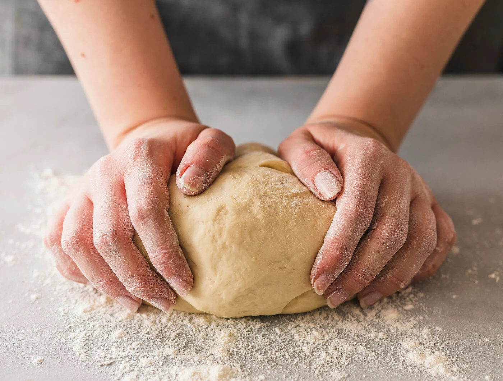

Pizzateig

Description
Selbst gemacht schmeckt es doch am Besten. Aus nur wenig Zutaten bekommt man einen leckeren Pizzateig, den man anschließend nach Belieben belegen kann. Die Zubereitung ist schnell und einfach.
Ingredients
- 250 ml lauwarmes Wasser
- 1 Würfel Hefe
- 1 TL Salz
- 1 Prise Zucker
- 2 EL Öl
- 500 g Mehl und etwas zur Teigverarbeitung
Steps
- 250ml lauwarmes Wasser in einen Messbecher füllen. Hefe hineinbröseln und mit einer Prise Zucker und Salz verrühren. 10-15 Minuten gehen lassen.
- Das Mehl in eine Schüssel geben. Flüssigkeit und Öl über das Mehl geben und mit den Knethaken des Handrührgeräts mindestens 5 Minuten kneten (von Hand mindestens 10 Minuten lang kneten). Zum Schluss mit den Händen noch einmal wenige Minuten weiterkneten, bis der Teig geschmeidig ist. Die Teigschüssel mit einem Tuch abdecken und an einem warmen Ort (ca. 35°C) etwa 40 Minuten gehen lassen.
- Teig halbieren und auf bemehlter Arbeitsfläche rund (Ø ca. 28-30 cm) ausrollen. Ofen auf 240 Grad (Umluft: 220) vorheizen. Zwei Standardbleche (38x45 cm) mit Backpapier belegen. Teige auf die Backbleche legen und etwas in die Ränder zurechtdrücken. Jetzt den Pizzateig nach Belieben mit Tomatensoße und verschiedensten Zutaten belegen. Pizza im vorgeheizten Ofen etwa 15 Minuten backen.